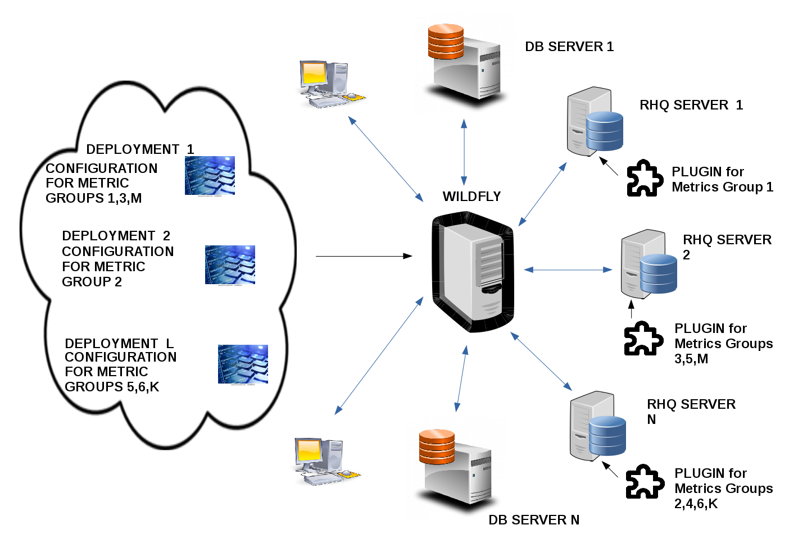

JBoss-Automated-Metrics - Everything is a potential metric
JBoss-Automated-Metrics is a framework, which intends to facilitate the creation, record and monitoring of metrics for any deployment. Using the power on interceptors and reflection the only thing that the developer has to do is to annotate the class or the method where lies the field-metric he wants to record by using the annotation @Metric. This way the field-metric will be automatically recorded in the metrics-cache and/or some database (using annotation @DBStore) and also monitored by RHQ.
JBoss-Automated-Metrics are available as :
|
JBoss-Automated-Metric FEATURES :
|
JBoss-Automated-Metrics ARCHITECTURE

FUTURE EXTENSIONS
LATEST NEWS
- Extend JBoss-Automated-Metrics to be monitored with Hawkular.
- Wildfly could contribute in Sciences - simulations, etc.
- Extend JBoss-Automated-Metrics to be displayed in the web console.
- Create standard metrics, ready for use.
LATEST NEWS
- JBoss-Automated-Metrics Wildfly Standalone version 1.0.0.Final is released!!! Search for org.jboss.metrics in The Central Maven Repo.
- JBoss-Automated-Metrics Java SE version 1.0.0.Final is released!!!
- JBoss-Automated-Metrics Wildfly Standalone version 1.0.1.Final is released!!! (Minor synchronization fixes)
- JBoss-Automated-Metrics Java SE version 1.0.1.Final is released!!! (Minor synchronization fixes)